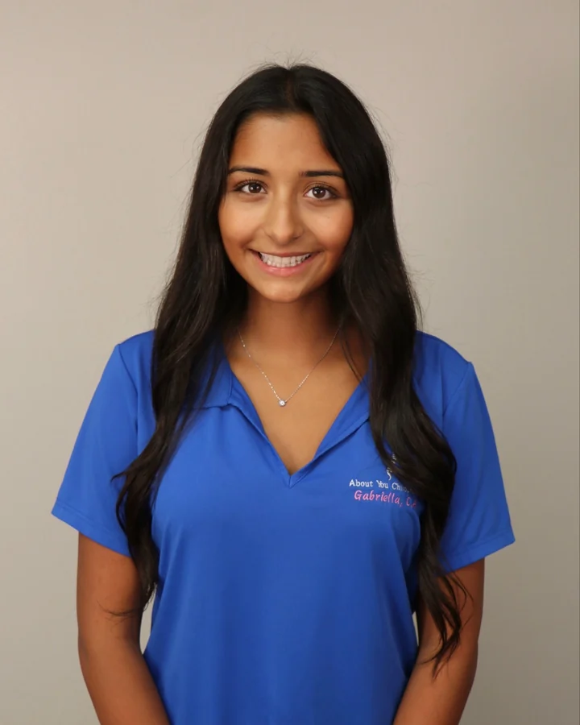
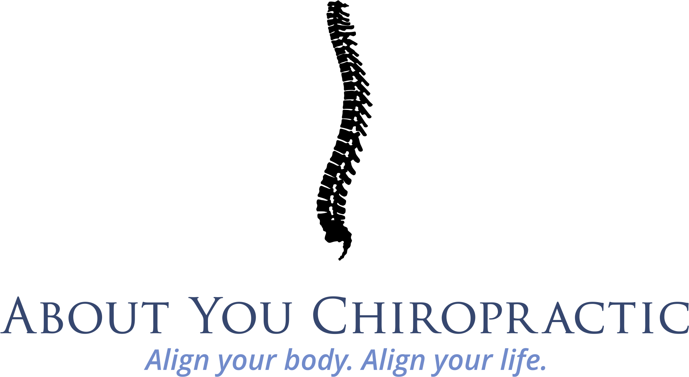
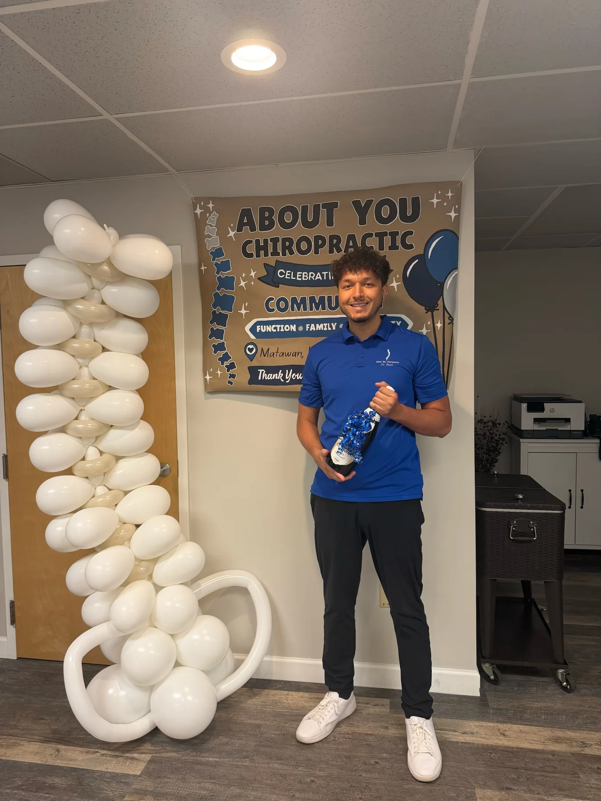
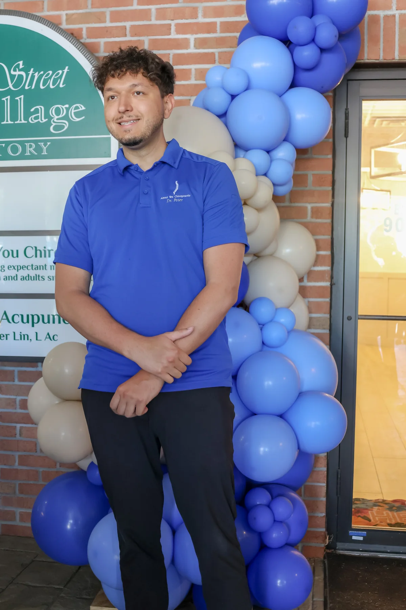
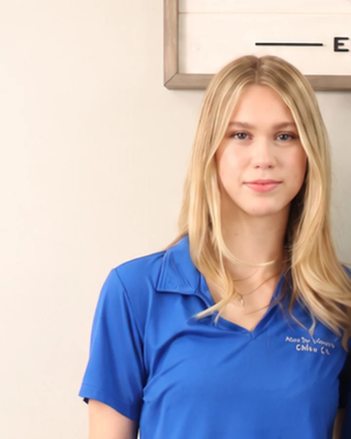

Gabriella, C.A.
For more than five years, Gabriella has helped keep the office welcoming and organized. She greets new practice members, answers questions, and coordinates schedules.

Meet the local chiropractor carrying this trusted practice forward.


I’m a New Jersey native who attended Christian Brothers Academy in Lincroft, earned my bachelor’s degree from Rutgers University in New Brunswick, and received my Doctor of Chiropractic degree from Sherman College of Chiropractic in South Carolina.
I spent more than five years caring for practice members in this office before purchasing the practice from Dr. Andrew Daniele in April 2026. It’s an honor to continue a practice that Matawan families have trusted since 1984.
I value getting to know people and helping them take a thoughtful role in their spinal health.
My goal is for you to feel informed, comfortable, and supported.
Gabriella and Chloe make every visit comfortable, organized, and welcoming.

For more than five years, Gabriella has helped keep the office welcoming and organized. She greets new practice members, answers questions, and coordinates schedules.

Chloe helps every practice member feel comfortable and valued from the moment they arrive. Her warmth and attention to detail shape our family-focused experience.
Your history, goals, questions, and comfort all help shape the recommendations.
You should understand what was found and why a recommendation makes sense.
Techniques are selected for your age, body, needs, and comfort—not from a template.
Experience a warm office where your questions are welcome and care is designed around you.